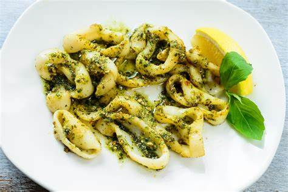
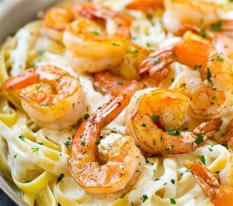
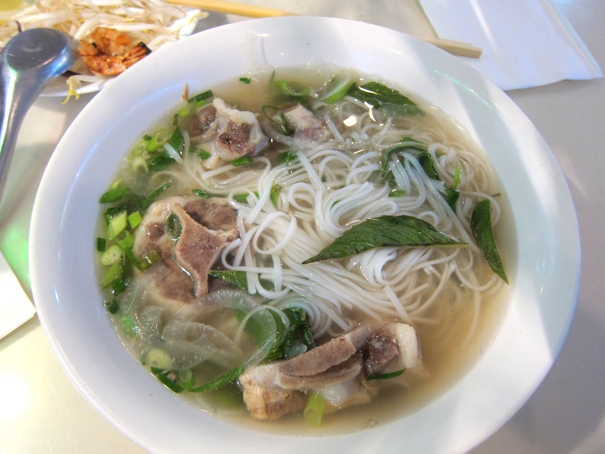

Pesto tortellini is my favorite dish because I love pesto. Also, tortellini is my favorite pasta. Naturally, putting the two together gives you an amazing dish. A memory I have is making pesto tortellini on vacation with my family.

| Pesto Ingredients | Pasta Ingredients | Filling Ingredients |
|---|---|---|
| Basil | Flour | Ricotta Cheese |
| Garlic | Eggs | Mozzarella Cheese |
| Olive Oil | Salt | Parmesan Cheese |
| Garlic | Water | Nutmeg |
| Pine Nuts | Salt & pepper | |
| Parmesan Cheese |
Shrimp Alfredo is a creamy pasta dish with tender shrimp and a rich sauce made from butter and Parmesan cheese. It’s usually served over fettuccine, making it a delicious and satisfying meal.
| Alfredo Ingredients | Pasta Ingredients |
|---|---|
| Butter | Flour |
| Heavy Cream | Eggs |
| Garlic | Salt |
| Parmesan Cheese | Water |
| Salt & Pepper | |
| Nutmeg |
Just add the shrimp
Pho is a flavorful Vietnamese soup made with broth, rice noodles, and fresh herbs. It's often served with beef or chicken, making it a comforting and delicious meal.
| Broth Ingredients | Soup Ingredients |
|---|---|
| Water | Rice Noodles |
| Beef Bones (or chicken for chicken pho) | Protien (Chicken or Beef) |
| Onion | Cilantro & Basil |
| Ginger | Bean Sprouts |
| Star Anise | Green Onions |
| Cinnamon & Salt |